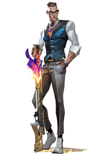

VALORANT
Un centro de investigación ultrasecreto dividido por un experimento fallido de radianita. Con opciones de defensa tan divididas como el mismo mapa, la elección es tuya: enfrentar a los atacantes en su propio territorio o cerrar las escotillas y resistir el asalto.
Demostrad vuestro estilo y experiencia en un escenario competitivo internacional. Dispondréis de 13 rondas para atacar y defender vuestro lado mediante un manejo de armas preciso y habilidades tácticas. Y, con una vida por ronda, tendréis que pensar más rápido que vuestros oponentes si queréis sobrevivir. Enfrentaos a vuestros enemigos en los modos competitivo y normal, además de en Combate a muerte y Fiebre de la Spike.
La creatividad es el arma más poderosa, aparte de las armas y las balas, tendréis a un agente con habilidades letales, adaptables y ágiles que os brindarán oportunidades para demostrar vuestro dominio con las armas. No hay doy agentes iguales, del mismo modo que no hay dos momentos destacados idénticos.
Celebra con nosotros la Champions 2021 y apoya a su equipo favorto con este paquete limitado. Del 24 de nomviembr al 12 de diciembre, el 50% de los ingresos netos del pack se destinará a los equipos participantes.
Chamber, el diseñador de armas francés, siempre bien vestido y bien pertrechado y expulsa a los agresores con precisión letal. Aprovecha su arsenal personalizado para repeler, eliminar enemigos a distancia y crear la contingencia perfecta para cada plan.
ACTÍVALA para equipar una pistola pesada. Utiliza el botón de modo de DISPARO ALTERNATIVO para apuntar con la mira.
COLOCA dos anclajes de teleportación. Mientras estén en el suelo y al alcance, REACTIVA la habilidad para teleportarte rápidamente al otro anclaje. Los anclajes se pueden recoger para VOLVER A COLOCARLOS.
COLOCA una trampa que rastrea a enemigos. Cuando un enemigo visible entra en el alcance, la trampa inicia una cuenta atrás y, a continuación, desestabiliza el terreno a su alrededor, lo que crea un campo persistente que ralentiza a los jugadores que se encuentren en su interior.
ACTÍVALA para sacar un poderoso rifle de francotirador personalizado que mata a los enemigos con cualquier impacto directo. Matar a un enemigo genera un campo persistente que ralentiza a los jugadores que se encuentren en su interior.